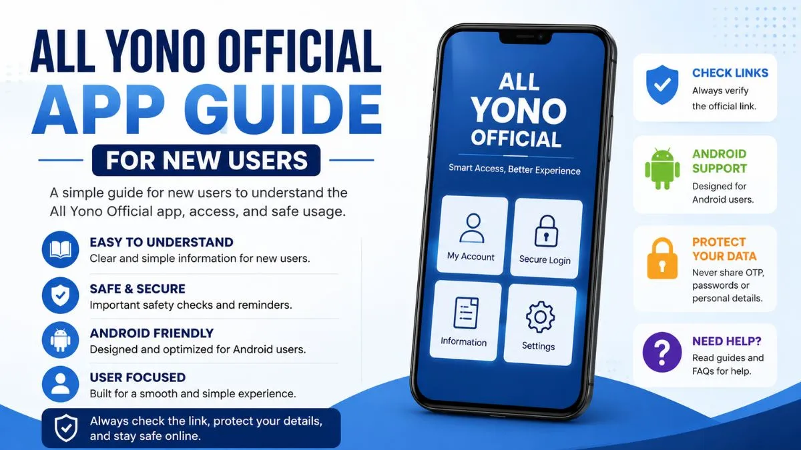

All Yono Official App Guide for New Users

Many users search for All Yono Official because they want a simple way to understand the app, access details, Android-related information, and basic safety checks before opening any link or file. This guide is written for new users who want clear information first, without confusing claims or unnecessary hype.
If you are visiting the site for the first time, it is better to slow down and check the basics. A mobile app or web-based platform may look simple from the outside, but users should still know what they are opening, what information may be requested, and how to avoid unsafe links.
This guide explains the main points in a practical way. It is not meant to push users into quick action. It is meant to help users understand what to check before continuing.
What Is All Yono Official?
All Yono Official is usually searched by users who are looking for app-related information, access notes, or a basic guide connected to the All Yono Official name. For a new user, the most important step is not to rush. The first step is to understand what the page or app is showing before interacting with it.
A useful information page should explain the basic purpose of the app, how users can navigate it, what details may be needed, and what safety checks should be done first. It should not pressure users with exaggerated claims or unclear instructions.
For that reason, this guide focuses on user awareness. It explains the common things new users should check, especially when opening app pages, Android files, login screens, or shared links.
Why New Users Should Read a Guide First
Many users open a site or app link and immediately look for the next button. That is common, especially on mobile. But it can also lead to mistakes.
A guide helps users understand the page layout, access flow, and basic safety reminders. It also helps users avoid fake pages that copy names, logos, or similar-looking designs.
Before using any app-related page, users should ask simple questions. Is the link clear? Does the page explain what it is? Is it asking for private information too early? Are there strange pop-ups? Does the page redirect too many times?
These checks may sound small, but they matter. A careful user is less likely to share sensitive details on the wrong page.
For the main site overview, users can start from the All Yono Official homepage and then continue to related guides from there.
Basic Things to Check on the App Page
When opening All Yono Official or any related app page, start with the visible details. The page should be easy to read. The buttons should make sense. The text should not be full of unrealistic promises. A clean page usually explains what users can expect before asking them to take action.
Check the name carefully. Some unsafe pages use small spelling changes to look similar to known names. A single missing letter, extra word, or unusual domain can lead to a different site.
Also look at the page behavior. If the page keeps opening new tabs, forcing pop-ups, or sending you to unrelated pages, be careful. A normal user guide or app information page should not feel confusing.
If there is an app file involved, check the file name, source, and instructions before opening it. Do not install any file just because it appears on a shared link.
Android Access and App File Awareness
Many Indian users access app-related platforms through Android devices. This is common because Android allows users to install apps in different ways. But that flexibility also means users need to be more careful.
Before opening any app file, check where it came from. A file shared through random groups, shortened links, or unknown pages should be treated carefully. If the source is unclear, do not rush.
Also check the permission requests. Some apps may ask for permissions that match their function. Others may ask for too much. Be careful if an app asks for access to contacts, SMS, storage, notifications, or other sensitive parts of your phone without a clear reason.
A simple rule helps: if the permission does not match the purpose of the app, pause first.
Device settings can allow an app file to install, but that does not automatically confirm that the file is safe. Installation permission and file safety are different things. For more detail on this topic, see our APK information and Android notes.
Login and Account Access Reminders
If a page includes login or account access, handle it carefully. Do not enter OTPs, passwords, personal IDs, or payment-related details on pages that feel unclear.
A trusted access page should not ask for sensitive details in a confusing way. It should also not pressure users to act immediately. If a login page appears after several redirects, or if the domain looks different from what you expected, stop and check again.
Users should also avoid saving passwords on shared devices. If you are using a friend's phone, public computer, or office device, do not keep account details stored in the browser.
For mobile users, it is also useful to clear old tabs. Sometimes users return to an old page without noticing that the session has expired or the page has changed.
How to Check Whether a Link Looks Safe
A link can look normal at first glance, but it is still worth checking. Look at the full domain name, not just the title shown on the page. Some pages use similar text to make users feel they are on the correct site.
Avoid links with too many random numbers, strange symbols, or unclear redirects. Short links can also hide the real destination, so be extra careful with them.
If you reached All Yono Official from search results, compare the page title, domain, and page content. If the page looks unrelated to what you searched, leave it.
It is also a good habit to bookmark the correct page after checking it. This reduces the chance of returning through random shared links later. For a deeper walkthrough, read our article on checking an All Yono Official link.
What New Users Usually Look For
New users usually want simple answers. They want to know what the app is, how to access it, whether it works on Android, what details are needed, and how to avoid unsafe pages.
That is why an app guide should be direct. It should answer common questions without using confusing words. It should also explain safety points before users interact with links, buttons, or files.
For All Yono Official, the most useful information for new users includes the basic app overview, access notes, Android file awareness, login reminders, and link safety checks.
These topics help users understand the platform better before making any action.
Common Issues New Users May Notice
Sometimes a page may not open correctly. This can happen because of browser cache, slow internet, expired links, device settings, or temporary site changes.
If a page does not load, try refreshing once. If it still does not work, avoid repeatedly clicking unknown mirror links. Some users make the mistake of searching random alternatives and end up on unrelated pages.
If an app file does not open, check whether your device allows installation from that source. But even if your device allows it, that does not automatically mean the file is safe.
If login does not work, do not keep entering the same private details again and again. Check the page first. If something feels wrong, stop.
Safety Reminders for Indian Users
Online users in India should be careful with personal data. Do not share Aadhaar details, OTPs, bank information, wallet details, passwords, private screenshots, or account records on unknown pages.
Also be careful with Telegram, WhatsApp, or social media links claiming to provide quick access. Some may be genuine community links, but others may simply copy popular names to attract users.
A safe approach is simple. Read first, check the source, confirm the domain, and avoid sharing private information unless you clearly understand why it is needed.
If a page asks for sensitive information too early, that is a warning sign.
Quick User Checklist
Before continuing, check these points:
| What to Check | Why It Matters |
|---|---|
| Domain name | Helps avoid fake or similar-looking pages |
| Page content | Shows whether the site clearly explains itself |
| App file source | Reduces risk from unknown files |
| Permissions | Helps protect private phone data |
| Login page | Prevents entering details on unsafe pages |
| Redirects | Too many redirects can be a warning sign |
| Private details | OTPs, passwords, and IDs should be protected |
This checklist is not complicated, but it is useful. New users should treat it as a habit whenever they open app-related pages.
Before You Continue
All Yono Official may be searched by users for different reasons, but the safest first step is always the same: understand the page before using it.
Do not rush through links. Do not share private details on unclear pages. Do not install files from sources you do not trust. Check the domain, read the information, and make sure the page matches what you expected to find.
For new users, this guide can work as a simple starting point. Once the basics are clear, it becomes easier to navigate app-related pages with more confidence and fewer mistakes. You can also browse more All Yono Official updates and help for additional notes.
FAQs About All Yono Official
AllYonoOfficial.com does not run or own the apps listed here. The rummy app can be addictive and risky financially, so use them carefully. Only for 18+ people.
Please read our Disclaimer page and the specific disclaimer for each app.
Alert: Rummy, a skill-based game, is banned by the government in Andhra Pradesh, Sikkim, Nagaland, Assam, Arunachal Pradesh, Tamil Nadu, Odisha, and Telangana.